Open Music Theory：繁體中文版
音符、譜號與加線的記寫
查看英文原文
Key Takeaways
- A note indicates both pitch and rhythm.
- Notes are written on a staff. Notes with a higher frequency (shorter wavelength) are written higher on the staff than notes with a lower frequency (longer wavelength). That is, higher notes are placed above lower ones.
- A notehead must be written carefully on a staff. A notehead is oval (not round); additionally, it should be neither too large nor too small, and it is tilted slightly upward toward the right.
- The stems of notes can point either upward (on the right side of a note) or downward (on the left side of a note). For notes above the middle line, the stem points downward, and for notes below the middle line, stems point upward. Notes on the middle line can point in either direction, depending on the surrounding notes.
- Writing seconds always involves displacing one note to the left or right of a stem. The lower note always goes on the left, regardless of whether the stem points up or down.
- A clef indicates which pitches are assigned to the lines and spaces on a staff.
- Extra lines (that are small) called ledger lines extend a staff higher or lower.
Western musical notation privileges two musical features: pitch and rhythm. Pitches are notated vertically (on the y-axis), while rhythms are notated horizontally (on the x-axis). Western musical notation is read left-to-right and top-to-bottom, like the page of a book in written English.
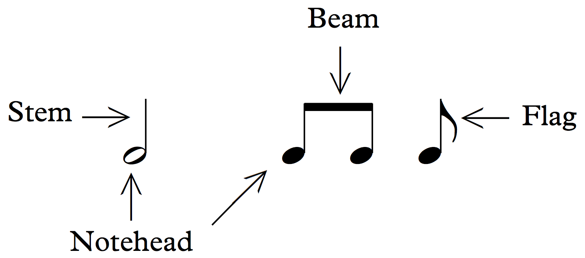
- Notehead：符頭；
- Stem：符幹；
- Beam：符槓；
- Flag：符尾。
查看英文原文
Notation of Notes
A note indicates both pitch and rhythm. Each written note consists of a notehead (either empty or filled in) and may also have a stem and a beam or flag (see Notating Rhythm). Example 1 shows an illustration of noteheads, stems, beams, and flags:
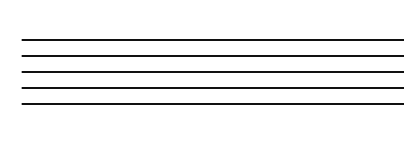
寫在線上的符頭，應各占上、下相鄰間距的一半；寫在間內的符頭，則應剛好碰到上、下兩條線。例 3示範正確的符頭，包括線上與間內的空心、實心符頭：
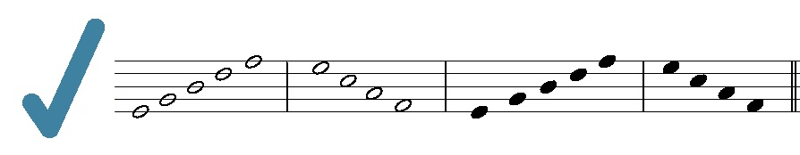
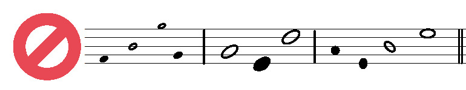
查看英文原文
Placing Notes on a Staff
Noteheads on a line should fill in half of each space above and below. Noteheads in a space should just touch the lines above and below. Example 3 shows examples of correct noteheads, both open and filled in, both on lines and in spaces:
Noteheads should be oval (not round), and they are tilted slightly upward toward the right. Example 4 shows incorrect noteheads.[1] As you can see, noteheads can be drawn too small, too big, or the wrong shape.
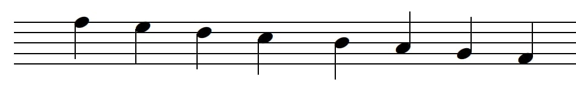
你可以透過下列拖曳配對練習，熟悉符幹方向：
查看英文原文
Stems and Beams
The stems of notes can point either upward (on the right side of a note) or downward (on the left side of a note). For notes above the middle line, the stem points downward, and for notes below the middle line, stems point upward. Notes on the middle line can point in either direction, depending on the surrounding notes. This is shown in Example 5:
Stemming directions and beaming conventions are discussed more in Simple Meter and Time Signatures and Compound Meter and Time Signatures. When hand-drawing stems, their length is equal to four lines of the staff. Beams are about four times thicker than stems.
You can practice stemming directions by dragging and dropping in the following exercise:
相距二度的音若同時發聲，便位於五線譜相鄰的線與間，因此必須將其中一個符頭移到符幹的左側或右側。二度的概念可參閱〈鍵盤與大譜表〉中的〈音程度數〉。不論符幹朝上或朝下，較低的音永遠在左側。例 6示範正確的二度記法：
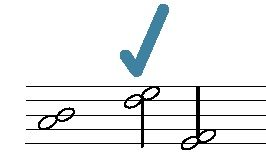
二度音程的兩個符頭不應直接上下堆疊，也不應把較低的音放在右側；例 7示範這些錯誤：
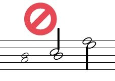
七和弦中出現二度時的記寫方式，將於〈七和弦〉討論。
查看英文原文
Drawing Seconds
When notes at the interval of a second (see the Generic Intervals section of The Keyboard and the Grand Staff) occur harmonically, they are on an adjacent line and space of the staff, so one note needs to be displaced to the left or right of the stem. The lower note always goes on the left, regardless of whether the stem points up or down. Example 6 shows the correct way to draw seconds:
Seconds should not be stacked on top of one another, nor should the lower note be on the right, as seen in Example 7:
Drawing seconds in seventh chords is discussed in Seventh Chords.
五線譜各線與各間上的音符表示音高。音樂家以空間比喻描述譜上的音符：靠近上方的音稱為「較高」，靠近下方則稱為「較低」。較高的音由波長較短、因而頻率較高的聲波產生；波長較長、頻率較低的聲波，則產生較低的音。
若要讓音符提供超出「較高」與「較低」的具體音高資訊，五線譜就必須包含譜號。譜號決定各線與各間所對應的音高，另見〈譜號的判讀〉。今日最常用的兩種譜號是高音譜號與低音譜號；另外也可能遇到中音譜號與次中音譜號。例 8把同一音高分別寫在高音、低音、中音及次中音譜號之後：
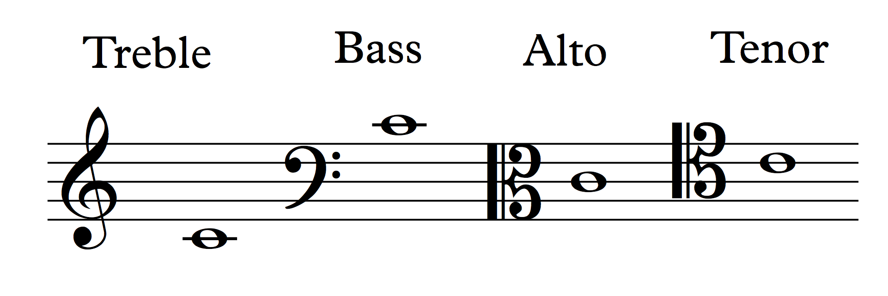
- Treble：高音譜號；
- Bass：低音譜號；
- Alto：中音譜號；
- Tenor：次中音譜號。
較高的音，例如長笛演奏或女高音演唱的音，通常以高音譜號記寫；較低的音，例如長號演奏或男低音演唱的音，通常以低音譜號記寫。與這兩種譜號相比，中音與次中音譜號較少見；但某些情況會以中音譜號記寫中高音，以次中音譜號記寫中低音。
查看英文原文
Clefs
The notes drawn on the lines and spaces of a staff represent pitches. Musicians use spatial metaphors to describe notes placed on a staff: notes appearing toward the top of the staff are said to be “higher” than those toward the bottom, which are said to be “lower.” Higher pitches are produced by sound waves with a shorter wavelength (and consequently a higher frequency); sound waves with a longer wavelength (lower frequency) produce lower pitches.
For notes to convey pitch information beyond “higher” and “lower,” the staff on which they appear must include a clef. A clef indicates which pitches are assigned to the lines and spaces on a staff (see also Reading Clefs). The two most commonly used clefs today are the treble clef and bass clef. Two other clefs that you may encounter are the alto clef and the tenor clef. Example 8 shows the same pitch placed after the treble, bass, alto, and tenor clefs:
Higher notes, such as those played by a flute or sung by a soprano, are usually written in treble clef, and lower notes, such as those played by a trombone or sung by a bass, are usually written in bass clef. Alto and tenor clefs are relatively rare compared to treble and bass. But in some cases, alto clef is used for medium-high notes, and tenor clef is used for medium-low notes.
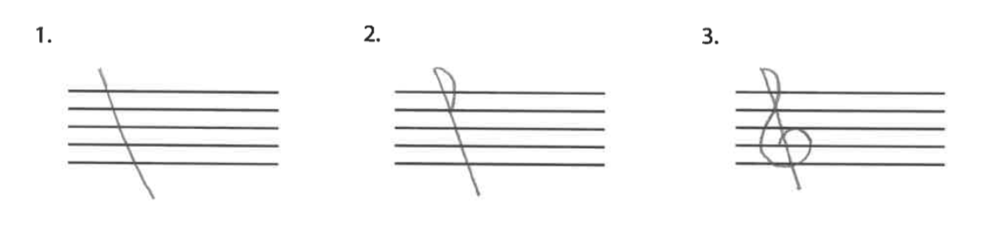
- 畫一條略微傾斜的直線，上、下都稍微超出五線譜。
- 畫一個半圓，在由上往下第二條線的位置與斜直線相交。
- 繞著由下往上第二條線畫圈，盡量讓圈保持在最下方兩個間的範圍內。
同樣地，低音譜號也可以分成三個步驟來畫，如例 10：
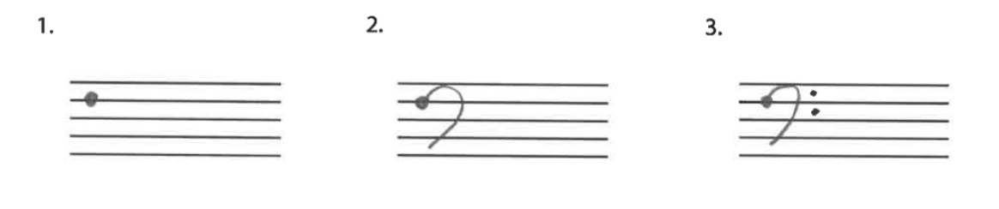
- 在由上往下第二條線上畫一個點。
- 畫一個反向的 C，末端停在最下方的間內；注意 C 的上方不要超出五線譜。
- 在反向 C 的右側畫兩個點，分別置於最上方兩個間的中央。
中音譜號可以分成四個步驟來畫，如例 11：
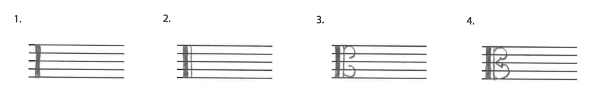
- 畫一條跨越五線譜高度的粗直線。
- 在旁邊再畫一條較細的直線。
- 畫兩個反向的 C：第一個占略少於五線譜上半部的範圍，第二個占略少於下半部的範圍。
- 以一個落在第三線上的尖角，連接兩個反向的 C。
如例 12所示，次中音譜號的畫法與中音譜號相同，只是整體上移一條線。步驟 1、2 的直線從由下往上第二條線開始，向上稍微超出五線譜。第一個反向的 C 稍微超出五線譜的上半部；第二個占略少於中間兩個間的範圍。連接兩者的尖角，落在由上往下第二條線上。
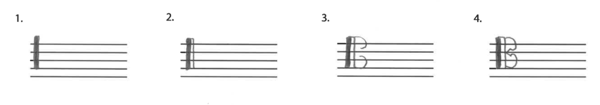
音樂家手寫中音或次中音譜號時，有時會以字母「K」作為簡寫，如例 13：
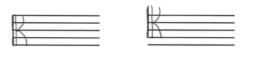
查看英文原文
Drawing Clefs
One can draw a treble clef in three simple steps, as demonstrated in Example 9:[2]
- Draw a slanted vertical line that extends slightly above and below the staff.
- Draw a half circle that intersects with your slanted line at the second staff line from the top.
- Circle around the second staff line from the bottom. Try to keep your circle within the bottom two spaces.
Likewise, one can also draw a bass clef in three steps, as shown in Example 10:
- Draw a dot on the second staff line from the top.
- Draw a backward C that ends in the bottom space of the staff, making sure that the top part of the C does not extend above the staff.
- Place two dots to the right of the backward C, centered respectively in the top two spaces of the staff.
One can draw an alto clef in four steps, as Example 11 shows:
- Draw a thick vertical line that spans the staff.
- Draw a thinner vertical line next to it.
- Draw two backward Cs, the first taking up slightly less than the top half of the staff and the second taking up slightly less than the bottom half of the staff.
- Connect these backward Cs with a point that rests on the middle line of the staff.
As seen in Example 12, the tenor clef is drawn the same way as the alto clef, just shifted up one line of the staff higher. The vertical lines in steps 1 and 2 begin on the second staff line from the bottom and extend slightly above the staff. The first backward C extends slightly above the top half of the staff, and the second takes up slightly less than the middle two spaces of the staff. The point connecting them rests on the second staff line from the top.
Sometimes when musicians draw the alto or tenor clef, they do so by writing the letter “K” as a form of shorthand. Example 13 shows this:
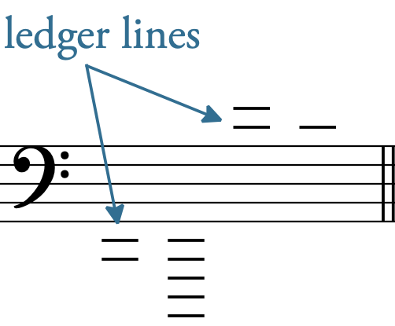
例 15呈現寫在五線譜上、下方加線上的音符，包含符幹及符槓。
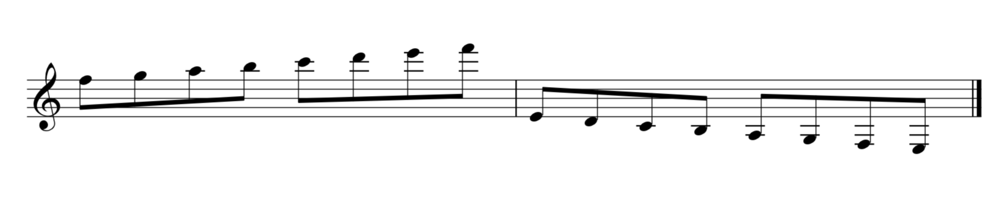
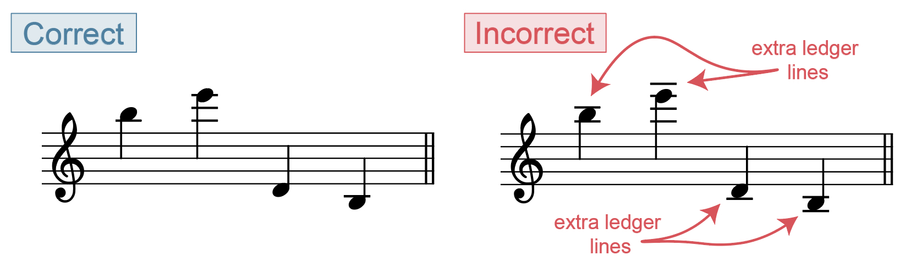
- Correct：正確；
- Incorrect：錯誤；
- extra ledger lines：多餘的加線。
- 2001。〈加線〉（“Ledger line”）。Grove Music Online。https://doi.org/10.1093/gmo/9781561592630.article.16296。
- Gerou, Tom 與 Linda Lusk。1996。《記譜法必備辭典》（Essential Dictionary of Music Notation）。洛杉磯：Alfred。
- Gould, Elaine。2011。《Behind Bars：記譜法權威指南》（Behind Bars: the Definitive Guide to Music Notation）。倫敦：Faber Music。
- Hiley, David。2001。〈譜號（i）〉（“Clef (i)”）。Grove Music Online。https://doi.org/10.1093/gmo/9781561592630.article.05927。
- 同上作者。2001。〈五線譜〉（“Staff”）。Grove Music Online。https://doi.org/10.1093/gmo/9781561592630.article.26519。
- McGrain, Mark。1986。《記譜法》（Music Notation）。波士頓：Berklee Press。
- Roemer, Clinton。1985。《抄譜的藝術：演奏用樂譜的準備》（The Art of Music Copying: The Preparation of Music for Performance），第二版。Sherman Oaks：Roerick Music Company。
- Straus, Joseph。2022。《音樂要素》（Elements of Music）。紐約：Oxford。
媒體素材署名
- 符頭、符幹、符槓與符尾，© Bryn Hughes，採用 CC BY-SA（姓名標示－相同方式分享）授權。
- 五線譜，© Chelsey Hamm，採用 CC BY-SA（姓名標示－相同方式分享）授權。
- 正確的符頭，© Megan Lavengood，取材自 Straus，採用 CC BY-SA（姓名標示－相同方式分享）授權。
- 不正確的符頭，© Megan Lavengood，取材自 Straus，採用 CC BY-SA（姓名標示－相同方式分享）授權。
- 符幹方向，© Chelsey Hamm，採用 CC BY-SA（姓名標示－相同方式分享）授權。
- 正確的二度記法，© Megan Lavengood，取材自 Straus，採用 CC BY-SA（姓名標示－相同方式分享）授權。
- 不正確的二度記法，© Megan Lavengood，取材自 Straus，採用 CC BY-SA（姓名標示－相同方式分享）授權。
- 四種譜號與音符，© Kris Shaffer（OMT），採用 CC BY-SA（姓名標示－相同方式分享）授權。
- 高音譜號的畫法，© Chelsey Hamm，採用 CC BY-SA（姓名標示－相同方式分享）授權。
- 低音譜號的畫法，© Chelsey Hamm，採用 CC BY-SA（姓名標示－相同方式分享）授權。
- 中音譜號的畫法，© Chelsey Hamm，採用 CC BY-SA（姓名標示－相同方式分享）授權。
- 次中音譜號的畫法，© Chelsey Hamm，採用 CC BY-SA（姓名標示－相同方式分享）授權。
- K 形譜號，© Chelsey Hamm，採用 CC BY-SA（姓名標示－相同方式分享）授權。
- 不含音符的加線，© Megan Lavengood，採用 CC BY-SA（姓名標示－相同方式分享）授權。
- 加線上的音符，© Chelsey Hamm，採用 CC BY-SA（姓名標示－相同方式分享）授權。
- 正確與錯誤的加線，© Sarah Louden，採用 CC BY-SA（姓名標示－相同方式分享）授權。
查看英文原文
Writing Ledger Lines
When notes are too high or low to be written on a staff, small lines called ledger lines are drawn to extend the staff. Example 14 shows ledger lines written above and below a staff:
Example 15 shows notes (with stems and beams) drawn on ledger lines, above and below a staff.
When writing ledger lines, be sure not to put in an extra ledger line above or below the note you are writing. Example 16 first shows the correct way of writing notes on ledger lines, followed by the incorrect way, with extra ledger lines above and below the notes:[3]
- 2001. “Ledger line.” Grove Music Online. https://doi.org/10.1093/gmo/9781561592630.article.16296.
- Gerou, Tom and Linda Lusk. 1996. Essential Dictionary of Music Notation. Los Angeles: Alfred.
- Gould, Elaine. 2011. Behind Bars: the Definitive Guide to Music Notation. London: Faber Music.
- Hiley, David. 2001. “Clef (i).” Grove Music Online. https://doi.org/10.1093/gmo/9781561592630.article.05927.
- ——. 2001. “Staff.” Grove Music Online. https://doi.org/10.1093/gmo/9781561592630.article.26519.
- McGrain, Mark. 1986. Music Notation. Boston: Berklee Press.
- Roemer, Clinton. 1985. The Art of Music Copying: The Preparation of Music for Performance, 2nd edition. Sherman Oaks: Roerick Music Company.
- Straus, Joseph. 2022. Elements of Music. New York: Oxford.
- Pitch and Frequency (the Physics of Sound) (physicsclassroom.com)
- The Music Staff (essential-music-theory.com)
- Drawing Notes (YouTube)
- Clefs (Music Notes Now)
- Drawing Treble and Bass Clefs (YouTube)
- Drawing C Clefs (Ultimate Music Theory)
- The Staff, Clefs, and Ledger Lines (musictheory.net)
- Music Notation Style Guide (Indiana University)
- Writing Noteheads, Clefs, and Ledger Lines (with C clefs) (.pdf, .docx). Asks students to practice handwriting elements of music notation.
- Writing Noteheads, Clefs, and Ledger Lines (Treble and Bass clefs only) (.pdf, .docx). Asks students to practice handwriting elements of music notation.
Media Attributions
- Noteheads, Stem, Beam, Flag © Bryn Hughes is licensed under a CC BY-SA (Attribution ShareAlike) license
- Staff © Chelsey Hamm is licensed under a CC BY-SA (Attribution ShareAlike) license
- Correct Noteheads © Megan Lavengood (adopted from Straus) is licensed under a CC BY-SA (Attribution ShareAlike) license
- Incorrect Noteheads © Megan Lavengood (adopted from Straus) is licensed under a CC BY-SA (Attribution ShareAlike) license
- Stemming Directions © Chelsey Hamm is licensed under a CC BY-SA (Attribution ShareAlike) license
- Correct Seconds © Megan Lavengood (adopted from Straus) is licensed under a CC BY-SA (Attribution ShareAlike) license
- Incorrect Seconds © Megan Lavengood (adopted from Straus) is licensed under a CC BY-SA (Attribution ShareAlike) license
- Four Clefs and Notes © Kris Shaffer (OMT) is licensed under a CC BY-SA (Attribution ShareAlike) license
- Draw Treble Clef © Chelsey Hamm is licensed under a CC BY-SA (Attribution ShareAlike) license
- Draw Bass Clef © Chelsey Hamm is licensed under a CC BY-SA (Attribution ShareAlike) license
- Draw Alto Clef © Chelsey Hamm is licensed under a CC BY-SA (Attribution ShareAlike) license
- Draw Tenor Clef © Chelsey Hamm is licensed under a CC BY-SA (Attribution ShareAlike) license
- K Clefs © Chelsey Hamm is licensed under a CC BY-SA (Attribution ShareAlike) license
- Ledger Lines without Notes © Megan Lavengood is licensed under a CC BY-SA (Attribution ShareAlike) license
- Ledger Lines with Notes © Chelsey Hamm is licensed under a CC BY-SA (Attribution ShareAlike) license
- Correct Incorrect Ledger Lines © Sarah Louden is licensed under a CC BY-SA (Attribution ShareAlike) license